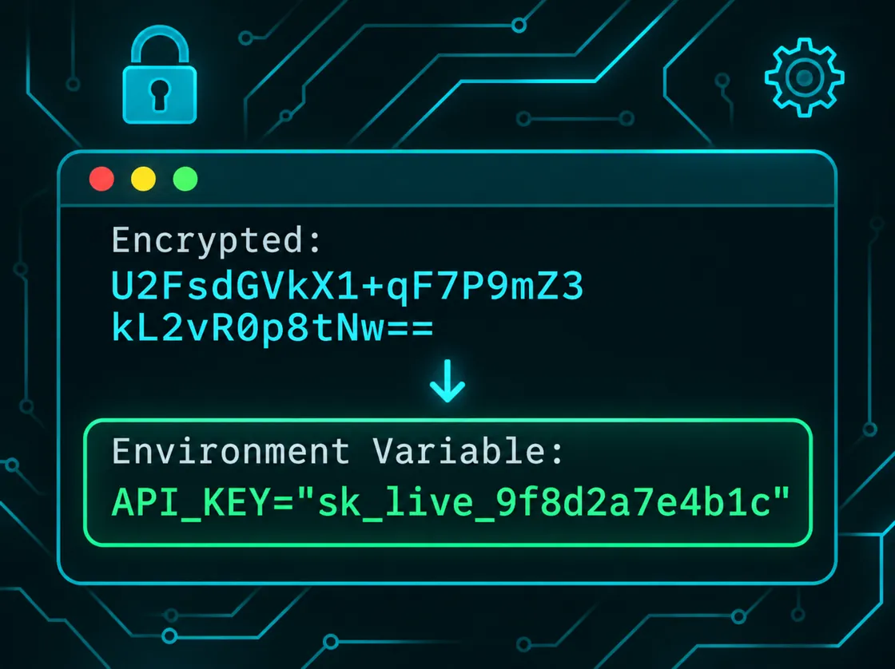

One file per directory
A .pathrc.toml holds settings, not scripts: env, alias and
path.prepend, in a [common] table for every shell and
[bash], [zsh] and [fish] tables of their own.
Logical project partitioning and more
pathrc sets environment variables, aliases and PATH entries as you
cd into a project, and takes them away again when you leave. Secrets stay encrypted with
age until the moment they're needed.
bash · zsh · fish · Linux and macOS
A .pathrc.toml holds settings, not scripts: env, alias and
path.prepend, in a [common] table for every shell and
[bash], [zsh] and [fish] tables of their own.
Files apply from the outermost directory in. A sub-directory overrides just what differs, such
as one AWS account in a project of many, and unset removes what it shouldn't have.
A .pathrc.toml.age is decrypted in memory with your age or SSH key, never written to
disk. pathrc edit opens it in your editor and encrypts it again for your team.
Leave a directory and its variables are unset, overridden values come back, and your own settings are restored. Nothing from project A leaks into project B.
A cloned repository can't change your shell: each file applies only after
pathrc allow, and again after every change to it.
cdMoving around inside a project reads nothing and decrypts nothing; pathrc only works when the files in scope change.
Put credentials in a .pathrc.toml.age and commit it with the project. It's encrypted with
age for everyone listed in the nearest
.pathrc-recipients, using their age or SSH public keys.
When you cd in, pathrc decrypts it in memory with your own key and sets the variables.
The plaintext never touches the disk, and leaving the directory unsets them again.

aws-project/.pathrc.toml
[common]
env.AWS_REGION = "eu-west-2"
env.TF_VAR_project = "billing"
path.prepend = ["bin"]
alias.tfp = "terraform plan"aws-project/prod/.pathrc.toml.age encrypted
[common]
env.AWS_ACCOUNT_ID = "111111111111"
env.AWS_REGION = "eu-west-1" # only prod differs
unset.env = ["AWS_PROFILE"]The latest release for Linux (x86-64, arm64) or macOS (Intel, Apple Silicon), checked against its
SHA-256 checksum and installed to /usr/local/bin:
curl -fsSL https://path-rc.com/install.sh | shA particular version, or somewhere you can write without sudo:
curl -fsSL https://path-rc.com/install.sh | PATHRC_VERSION=v0.3.0 sh
curl -fsSL https://path-rc.com/install.sh | PATHRC_INSTALL_DIR=$HOME/.local/bin shThen hook it into your shell's rc file:
eval "$(pathrc init)" # ~/.bashrc or ~/.zshrc
pathrc init fish | source # ~/.config/fish/config.fishAnd make a first file:
cd ~/work/aws-project
pathrc edit # create .pathrc.toml in $EDITOR; saving allows it
pathrc edit --encrypt # or .pathrc.toml.age, for secrets
pathrc list # the files in scope, and any problemsOther platforms can build from source with
cargo install --git https://github.com/path-rc/pathrc. On Windows, use WSL. Every release
is on GitHub.